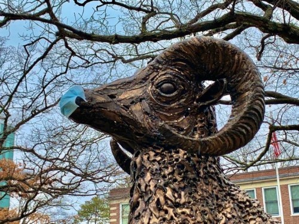

Framingham State University postpones commencement due to COVID-19

Framingham State’s 2020 Commencement ceremonies have been postponed out of precaution for COVID-19.
This is not a decision we take lightly,
wrote President F. Javier Cevallos in a campus-wide email sent March 18. Some schools across the country are considering canceling commencement all together, but that is not a step I am willing to take.
A new date for the baccalaureate and graduate commencement ceremonies, originally scheduled for May 24 in the Worcester DCU Center Arena and Convention Center, has not yet been determined by the University’s graduation committee, Cevallos said.
However, the event will likely take place at the end of summer or early fall, depending on how the coronavirus pandemic develops, he told The Gatepost.
Senior Jasmin Hill, who had just ordered her cap and gown before spring break, said it was upsetting for her to read Cevallos’ email. I felt like maybe the decision was a bit early, since we have a lot of time between now and May.
But on the other hand, I understand his decision,
she added. He’s worried about everyone’s health and safety. And when that comes into the picture, you have to make a tough decision, even if it’s a decision that the whole community isn’t a fan of.
With 1,838 confirmed cases of COVID-19 in Massachusetts as of noon Thursday – some colleges and universities have decided to hold their commencement ceremonies virtually for students and their families to attend while at home.
FSU is not considering a virtual option, Cevallos said. I think graduation is a truly important day in your life, and a virtual ceremony is just not the right way to celebrate.
Senior Domenique Page said she was thankful Cevallos made the decision to keep commencement offline. I think it would be downright cruel to not give students an event where they could physically display their achievement and celebrate as a class.
However, There will be a lot of unhappy students, including myself, if the president goes back on his word,
Page added.
Students will receive an update email once the commencement committee reaches a decision on how and when the ceremony will take place, Cevallos added.
Until that date is set, the schedule for when students may pick up or purchase graduation caps and gowns at the Campus Store has also been postponed, said Keith Jacques, store manager.
With commencement being postponed, senior Tony Perone expressed concern over how and when graduating seniors will be issued their degrees.
According to Ellen Zimmerman, interim provost and vice president of Academic Affairs, students who complete all of their degree requirements before May 31, the official graduation date, will have their degree posted to their academic record on that day.
Diplomas will be mailed to those students in June to the mailing address the University has on file for them, she added.
The decision to postpone this year’s commencement came after Gov. Charlie Baker issued an order prohibiting large gatherings of over 250 people March 13. This order was expanded to ban gatherings of 25 people or more March 15.
Everyone has a role to play in stopping the spread of the coronavirus,
said Baker in a statement. By limiting large gatherings, we can further mitigate the spread of the disease.
Currently, gatherings of 10 or more people are now prohibited by the Baker administration through an order issued March 23.
These gatherings include community, civic, public, leisure, faith-based events, and any similar event or activity that brings together more than 10 persons in any confined indoor or outdoor space,
according to a press release.
Postponing commencement is one of several decisions FSU administrators have made in response to the coronavirus pandemic.
Following the governor’s guidance, FSU will be moving all on-campus courses to remote instruction beginning March 30 and through the rest of the spring semester, according to a campus-wide email sent by Cevallos March 15.
Resident students will not be allowed to return to their dorms after spring break unless they file a request with the University.
For senior Siobhán Senier, these past few weeks have made her experience the five stages of grief.
Of course, we have no choice but to accept the decision,
she said. But moving on is the hardest part for seniors that have to suddenly pack up their lives and move home without saying proper goodbyes.
While Senier said she believes the decisions were for the best considering the circumstances, she still expressed disappointment at not being able to finish the rest of her college career the way she had hoped.
But on the other hand, new memories will be made,
she added. I will keep close contacts with my friends and professors to maintain a strong bond, and I am looking forward to walking across that stage among my family and friends more than anything in the world!
[Editor's note: Both the 2020 and 2021 commencement ceremonies at Framingham State were eventually canceled and replaced with online alternatives.]
❱ Read this article on The Gatepost’s old website via Internet Archive »